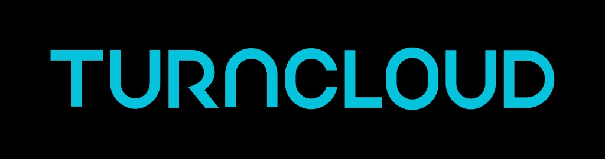

AI 時代真正的競爭力，
會發生在 資料處理能力。

PRESENTED TO · GOOGLEPANDORA × BIGQUERY · 工程實踐分享
為什麼 Pandora
選擇 BigQuery
一個社群聲量 AI 系統的真實使用心得 — Text-to-SQL、向量搜尋、RRF Hybrid Search、Serverless 資料底座。
Text-to-SQL
VECTOR_SEARCH
RRF Hybrid Search
Serverless
AI Agent
01 / THE BIG IDEAFOR GOOGLE BIGQUERY
”
模型可以越來越強、介面可以越做越漂亮。
但如果底層資料是亂的、慢的、不可查的，AI 最後只會變成一個講話很順的客服機器人。
但如果底層資料是亂的、慢的、不可查的，AI 最後只會變成一個講話很順的客服機器人。


04 / PANDORA 是什麼
SOCIAL INTELLIGENCE AI
Pandora — 社群聲量 AI 系統，讓品牌用自然語言查市場脈絡
使用者直接用自然語言提問，系統背後同時完成全文搜尋、語意搜尋、與融合排名三件重活。
使用者怎麼問？
- 「幫我分析全家福袋近 14 天的負面討論。」
- 「最近猛健樂副作用的討論集中在哪些平台？」
- 「競品被抱怨最多的是價格、服務、還是產品效果？」
系統背後同時做三件事
01
全文搜尋
對上千萬筆社群長文做掃描
02
向量搜尋
1536 維 embedding 語意相似度
03
RRF 融合
關鍵字 + 向量結果排序融合
05 / 資料特性
DATA CHARACTERISTICS
Pandora 面對的資料，不是一般資料庫想像中的資料
處理對象是社群上的真實語言：Dcard、Threads、PTT、Facebook、Mobile01。這些資料有四個非常麻煩的特性。
CHARACTERISTIC #01
很長
單篇平均約 2,000 token，等於每一列資料本身都很重。
CHARACTERISTIC #02
很多
資料量來到 上千萬筆，每次查詢要在數百 GB 純文字裡找訊號。
CHARACTERISTIC #03
難預測
LLM 動態生成 SQL，沒有人能提前知道它會查什麼欄位、組什麼條件。
CHARACTERISTIC #04
不只關鍵字
「價格太盤」「感覺被當韭菜」，背後都是「價格信任感不足」。
06 / REAL WORLD CHALLENGE
REAL WORLD CHALLENGE
為什麼「全家」是台灣最難監測的品牌？
傳統關鍵字監測的死穴：日常用語的嚴重干擾，以及台灣社群特有的反串語境。
CHALLENGE #01
「全家」的關鍵字災難
如果只用傳統關鍵字比對，系統會抓回超過 90% 的無效雜訊：
- ❌ 日常用語：「週末帶全家出去玩」
- ❌ 情緒謾罵：「詛咒別人全家去死」
- ✅ 真實討論：「全家的霜淇淋出新口味了」
CHALLENGE #02
反串與傳統 NLP 的極限
過去傳統 NLP 依賴字典加減分，遇到社群反串往往直接翻車：
- 👍 隱含正向：「這咖啡我還不喝爆」
- 👎 反串負向：「阿你不就好棒棒」
（傳統 NLP 看到「好棒棒」加分，會誤判為正向情緒） - ✨ 解決方案：用 Fine-tuned LLM 結合上下文語境，精準過濾語料與判斷真實情緒。
07 / TEXT-TO-SQLBIGQUERY
第一件事 · TEXT-TO-SQL
Text-to-SQL — 讓 LLM 直接查社群長文
使用者輸入自然語言 → LLM Agent 抽出品牌 / 產品 / 時間 / 情緒 / 平台條件 → 動態生成 SQL。
SELECT postId, title, SUBSTR(fContent, 0, 500) AS content, source, forumName, author, 10 + IFNULL(counts_like, 0) * 3 + IFNULL(counts_comment, 0) * 5 AS volume, pageCreatedAt, sentiment, url FROM `pandora_analytics.datalake_picked` WHERE ( CONTAINS_SUBSTR(LOWER(title), LOWER('全家')) OR CONTAINS_SUBSTR(LOWER(fContent), LOWER('全家')) OR CONTAINS_SUBSTR(LOWER(forumName), LOWER('全家')) ) AND SAFE_CAST(pageCreatedAt AS TIMESTAMP) >= TIMESTAMP_SUB(CURRENT_TIMESTAMP(), INTERVAL 14 DAY) ORDER BY volume DESC LIMIT 200
為什麼 BigQuery 撐得住？
- Dremel 架構 — massively parallel，把查詢 fan-out 到大量 slot。
- Capacitor columnar storage — 查 fContent 時只讀需要的欄位，不需要拉整列。
- Ad-hoc 查詢友善 — LLM 動態 SQL 不用提前建索引，對上千萬筆長文這個差異不只是快，而是查詢方式才變得「可行」。
我們無法預測下一個使用者會問什麼，也不可能為每一種問題提前設計索引。
08 / VECTOR_SEARCHBIGQUERY
第二件事 · VECTOR_SEARCH
BigQuery 原生 VECTOR_SEARCH — 處理語意相似度搜尋
關鍵字搜尋只能解決「有沒有提到這個字」。但「打完之後有點噁心」「胃不舒服」語意上就是猛健樂副作用。
WITH query_embedding AS ( SELECT [/* 1536-dim float array */] AS embedding ), vector_results AS ( SELECT base.document_id, distance FROM VECTOR_SEARCH( (SELECT document_id, embedding FROM picked_embeddings WHERE ARRAY_LENGTH(embedding) = 1536), 'embedding', TABLE query_embedding, top_k => 200, distance_type => 'COSINE' ) ) SELECT vr.document_id AS postId, 1 - vr.distance AS vectorScore, dp.title, dp.source, dp.forumName, dp.author FROM vector_results vr JOIN `pandora_analytics.datalake_picked` dp ON dp.postId = vr.document_id ORDER BY vectorScore DESC
關鍵不是語法短 — 而是 JOIN 回主表
向量資料、文章 metadata、平台、情緒、聲量、時間，全部都在同一個 BigQuery dataset。
- 不用在多個資料庫之間搬資料
- 不用同步資料、不用比對 ID
- 不用補救 latency 延遲
- 不用額外維護 Milvus / Pinecone / pgvector
09 / RRF HYBRID SEARCH
第三件事 · RRF HYBRID SEARCH
RRF Hybrid Search — 把關鍵字與語意結果融合
Pandora 同時跑兩條路：關鍵字搜尋找明確提到品牌的，向量搜尋找語意接近的。然後用 Reciprocal Rank Fusion 融合。
FORMULA · RECIPROCAL RANK FUSION
RRF_score = 1 / (k + keywordRank)
+ 1 / (k + vectorRank)
RRF 只看排名、不在意分數尺度。
兩邊都覺得相關的，排到最前面。
架構為什麼簡單？
- 兩條 query 都送進同一個 BigQuery。
- 回來後在 application layer 做輕量 merge。
- Promise.all 並行，總時間 ≈ max(A, B)，不是 A + B。
- 不需跨資料庫 join、不需補 ID、不需同步狀態。
await Promise.all([ vectorSearchPosts(queryEmbedding), keywordSearchPostsWithRank(keywords) ]); // merge 與 RRF 在 application layer 做
10 / 為什麼不用 POSTGRESQL
SELECTION TRADE-OFF
PostgreSQL 是好資料庫 — 但不是 Pandora 的工作負載
如果做的是會員系統、訂單系統、交易系統，PostgreSQL 很適合。但 Pandora 的核心工作負載完全不同。
⚠ 長文全表掃描很痛苦
PostgreSQL 是 row-store。千萬筆 × 長文的工作負載，每次掃描 fContent 都會造成極大 I/O 壓力。
- 就算加 GIN 或 pg_trgm，索引本身會變巨大
- 寫入會被放大、維護成本高
- LLM 動態 SQL 不可能為每種變形建 functional index
🔧 pgvector 與全文搜尋是兩個世界
用 PostgreSQL 做 hybrid search 大概需要這一整組：
- GIN / pg_trgm — 關鍵字搜尋
- pgvector + HNSW — 向量搜尋
- application layer — RRF 融合
- Redis — 快取層
每個都能做事，但 vacuum、connection pool、HNSW 參數、index bloat… 對小團隊都是真實成本。
11 / BIGQUERY 五大優勢FOR PANDORA
CORE ADVANTAGES
BigQuery 對 Pandora 最關鍵的五個優勢
不只是技術選型 — 這幾個特性決定了我們可以把多少時間放在產品邏輯與 AI 洞察上。
☁ #01
Serverless
不用碰 instance、IOPS、connection pool、failover、patching。小團隊不需要變成 DBA 團隊。
📊 #02
Capacitor
Columnar storage，只讀需要的欄位。對長文資料不只是快，是整個查詢方式變得可行。
🔍 #03
VECTOR_SEARCH
原生向量搜尋。不用維護向量資料庫，與 metadata 同 dataset 直接 JOIN。
🤖 #04
AI.GENERATE_EMBEDDING
資料庫開始是 AI 工作流的一部分，更多處理可以在 BigQuery 內完成。
⚡ #05
Continuous Queries
戰情室即時化，異常偵測 → Pub/Sub / Bigtable / Spanner，議題升溫不再等批次。
12 / 真實場景
REAL CASE STUDY
一個真實場景：「猛健樂副作用近期討論」
使用者輸入一句自然語言，系統在 10–20 秒內從上千萬筆長文裡，找出真正值得看的市場訊號。
STEP 01
LLM 抽關鍵字
從問題中抽出：猛健樂、Mounjaro、副作用、減肥針、腸胃不適、食慾下降。
STEP 02
關鍵字搜尋
BigQuery CONTAINS_SUBSTR 找出明確提到品牌的文章。
STEP 03
向量搜尋
VECTOR_SEARCH 找語意接近的：「打完很噁心」「胃不舒服」「吃不下」。
STEP 04
RRF 融合
兩邊都判斷相關的內容排到最前面。不只聲量高、不只語意像 — 是真正值得看。
13 / SELECTION MATRIX
PG vs BQ · PANDORA 的取捨
PostgreSQL vs BigQuery：Pandora 的實際取捨
不是哪一個比較好 — 是工作負載決定資料庫。
| 評估項目 | PostgreSQL | BigQuery | Pandora 最後選擇 |
|---|---|---|---|
| OLTP 交易 | 很強 | 不適合 | PG 勝 |
| 千萬筆長文分析 | 壓力大 | 適合 | BQ 勝 |
| LLM 動態 SQL | 需大量索引規劃 | ad-hoc 友善 | BQ 勝 |
| 向量搜尋 | pgvector + 自管索引 | 原生 VECTOR_SEARCH | BQ 勝 |
| Hybrid Search | 跨索引系統整合 | 同一資料平台處理 | BQ 勝 |
| 運維負擔 | 需 DBA 思維 | Serverless | BQ 勝 |
| 成本模型 | instance 常駐 | 按查詢量 | BQ 勝 |
| 小團隊友善度 | 中 | 高 | BQ 勝 |
14 / THE TAKEAWAYS
CORE VALUE
Pandora 從 BigQuery 得到的最大價值
解決的不只是技術問題，而是讓小團隊能把更多時間花在 AI 與洞察上。
解決了什麼？
- ✓ 不用預測使用者會問什麼 — BigQuery 承受 ad-hoc 查詢。
- ✓ 不用額外維護向量資料庫 — 原生 VECTOR_SEARCH。
- ✓ 不用拆到三四個系統 — 全文 / 向量 / metadata / 聚合同平台。
- ✓ 不用養 DBA 團隊 — Serverless 架構吃掉維運。
節省的時間花在哪？
- 🗣 讓 AI 更懂社群語言。
- 🚨 讓品牌更早看見風險。
- ✍ 把消費者痛點變成內容策略。
- 📈 把競品弱點變成市場機會。
15 / CLOSINGTHANK YOU · GOOGLE
AI 時代，資料庫選型
就是 產品戰略。
就是 產品戰略。
AI Agent 能不能真的有用，取決於它背後能不能穩定查到資料、理解資料、組合資料，最後把資料變成決策。
×
 ×
on
Google BigQuery
×
on
Google BigQuery